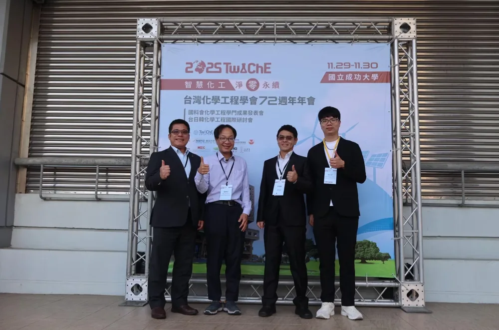
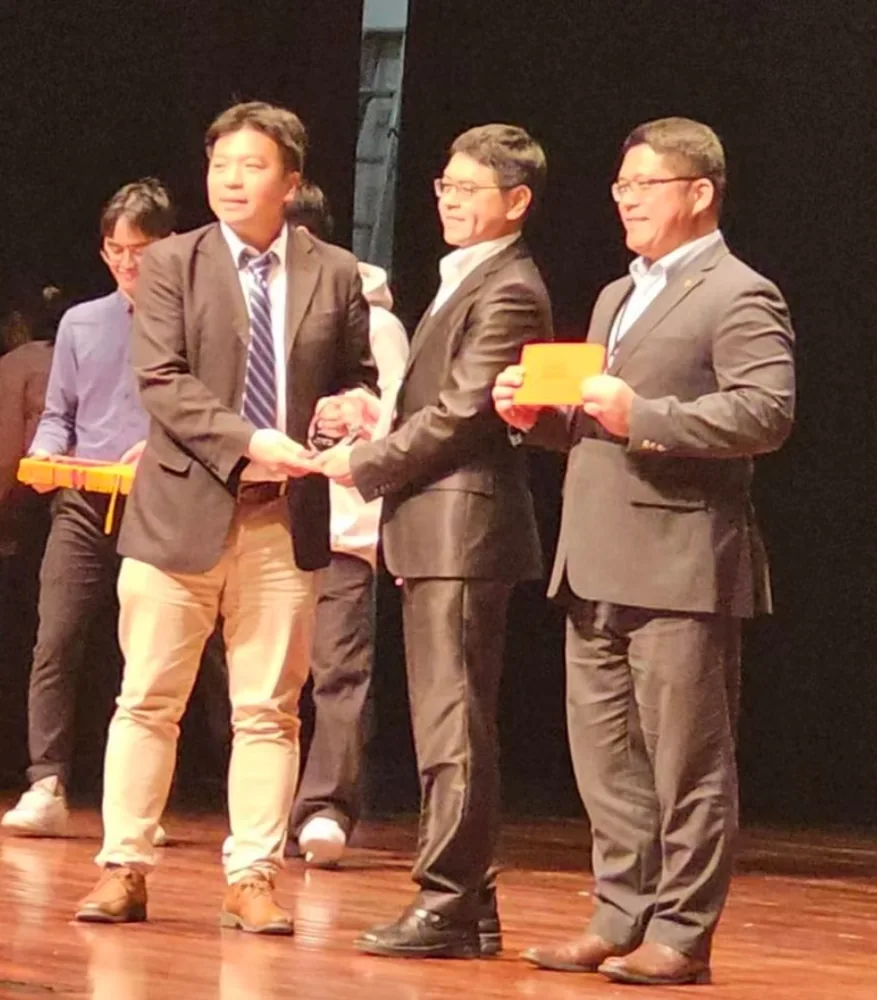

29–30 November 2025 · Conference dates
Congratulations to Prof. Kun-Mu Lee and Dr. Wei-Hao Chiu on the Chemical Engineering Masterpiece Award!
Congratulations to Prof. Kun-Mu Lee and Dr. Wei-Hao Chiu on receiving the Chemical Engineering Masterpiece Award (化工傑作獎)!
The award-winning work is “鈣鈦礦太陽能電池於太空應用的研究與展望” (Research and Prospects of Perovskite Solar Cells for Space Applications). The Center for Sustainability and Energy Technologies (CSET), Chang Gung University, officially announced the award on 18 September 2025, ahead of the November annual meeting.
On 29–30 November 2025, Prof. Kun-Mu Lee and Dr. Wei-Hao Chiu led a Frontier Materials Research Group (FMRG) delegation to the 72nd Annual Meeting of the Taiwan Institute of Chemical Engineers at National Cheng Kung University in Tainan to share the lab’s recent research.
The delegation included Dr. Shih-Hsuan Chen (陳世軒), 彥璋, 翊銘, and 煥瑜. Congratulations to the award recipients, and thank you to everyone who represented the lab!


Source: CSET official award announcement · 18 September 2025
Source: Taiwan Institute of Chemical Engineers · Chemical Engineering Masterpiece Award recipients
View award record →